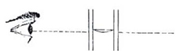
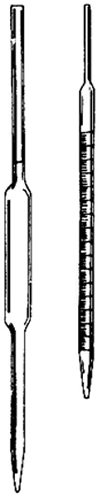
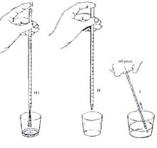
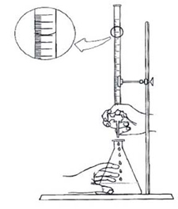

| Objetivo: |
Identificar cada una de las técnicas y operaciones de rutina que se hacen en el laboratorio para lograr desarrollar en el alumno algunas destrezas y habilidades en el trabajo del laboratorio. |
| Material |
|
|
| Introducción: |
| Es de suma importancia que los alumnos cuando trabajen en el laboratorio tengan en cuenta los riesgos que se tienen al trabajar en él; pero también es muy importante conocer el funcionamiento de los diversos materiales para tener al máximo y en lo posible un laboratorio seguro. De la misma forma cuando se trabaja en el laboratorio es requisito indispensable conocer las reglas de seguridad, para evitar accidentes. La química requiere de múltiples materiales que día con día se van actualizando y mejorando para proporcionar el mejor servicio y seguridad para realizar las diversas actividades experimentales, por este motivo es de gran importancia conocer la manera de trabajar con estos materiales y así adquirir las habilidades requeridas según el caso y lograr una correcta realización de nuestra actividad práctica. Por ser la química una ciencia experimental, quienes trabajamos en el laboratorio debemos conocer de manera práctica los cambios físicos y químicos de la materia y la energía, por ello es necesario conocer algunos aparatos y materiales del laboratorio, a fin de familiarizarse con su manejo, esto ayudara a efectuar experimentos desarrollando un espíritu de observación, lo que hará del estudio de la química un ejercicio ameno y agradable, ya que siempre será indispensable conocer ¿cómo se pesa una sustancia?¿cómo medir los líquidos? etc. |
| Desarrollo Experimental: |
|
Lectura de volúmenes en aparatos volumétricos: Técnica de Uso de Pipetas: Procedimiento:
(Ver Figura 3) Técnica de Uso de Buretas: Procedimiento:
La manipulación de la bureta será más eficiente si empleamos la mano izquierda para controlar la llave de paso e la mano derecha para girar el frasco receptor, como también, revolver la mezcla de la reacción con la vara de vidrio. Para retirar las burbujas que, por acaso, se vayan a formar junto a la llave de paso, debemos llenar la bureta hasta un determinado volumen y abrir la llave de paso, dejando la solución escurrir con fuerza. Cuando no haya más burbujas debemos cerrar la llave de paso y llenar nuevamente la bureta, hasta el cero. Nunca debemos devolver para su envase original la solución contenida en la bureta y no utilizada. Las buretas deben ser siempre lavadas después de uso, principalmente cuando se haya utilizado solución de NaOH, pues cuando son guardadas impregnadas con esta base, suelen soldar la llave de paso. Debemos nivelar siempre la bureta usando como referencia la parte inferior del menisco del líquido. Técnica de Uso de Matraces Volumétricos: Son usados tanto en la preparación de soluciones de concentración conocidas, como también en la dilución de soluciones ya preparadas. Procedimiento:
Importante: Técnica de Calentamiento de Tubos de Ensayo:
Procedimiento:
Importante: Calentamiento de Líquidos en el Vaso de Precipitado: Procedimiento:
Limpieza del Material de Vidrio: A pesar de que el recipiente parezca estar aparentemente limpio, sus paredes podrían estar grasosas, haciendo con que el líquido que va a ser medido no escurra debidamente por las buretas o pipetas, provocando resultados dudosos. Es común la utilización de detergente, jabones líquidos o en polvo para el trabajo de limpieza, sin embargo, esos materiales pueden dejar residuos en el vidrio que podrían interferir, también, en los análisis. |
| Resultados y Conclusiones : |
|
1) Por qué es importante conocer el manejo de los matraces volumétricos. 2) Describe la importancia de conocer las principales operaciones rutinarias del laboratorio. 3) Menciona algunas sugerencias para tener un laboratorio seguro. |
| Figura 1 |
|  |
| Figura 2 |
|  |
| Figura 3 |
|  |
| Figura 4 |
|  |